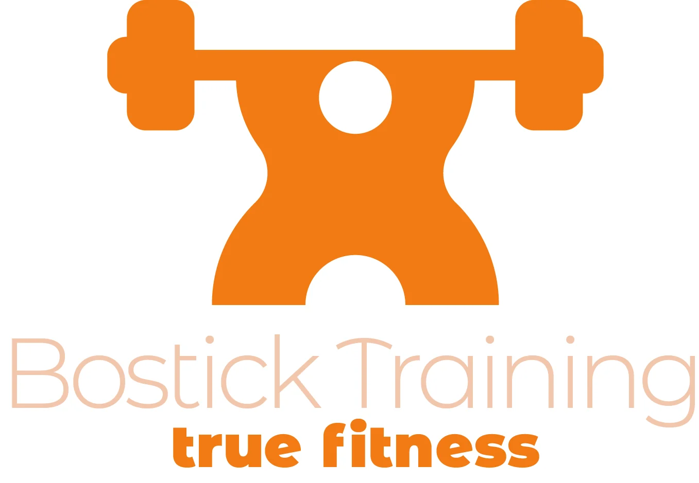
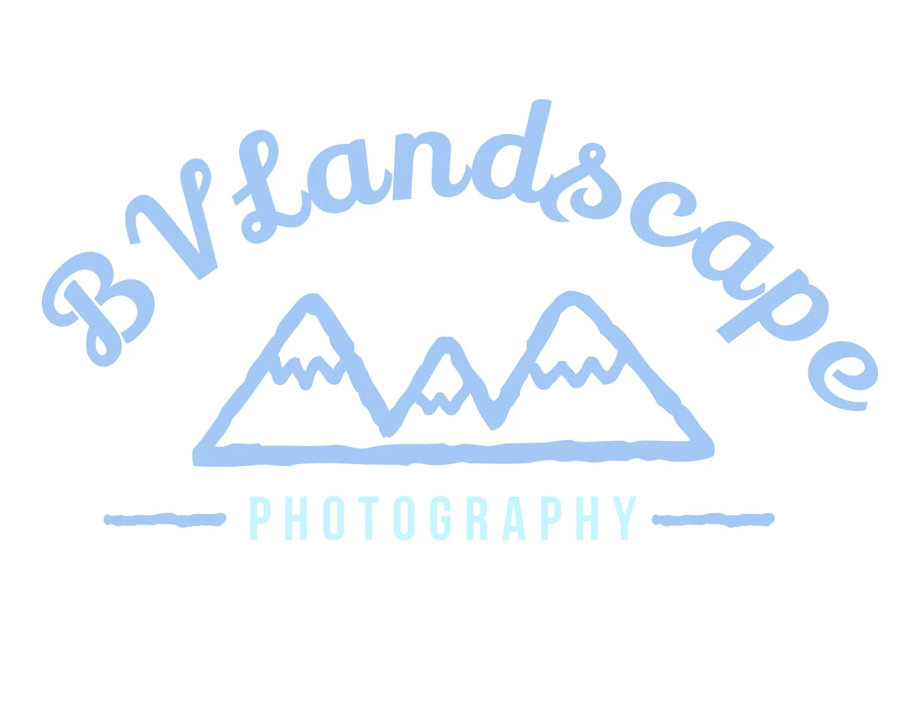
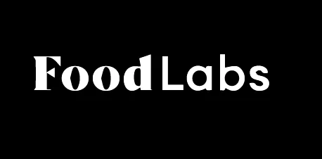
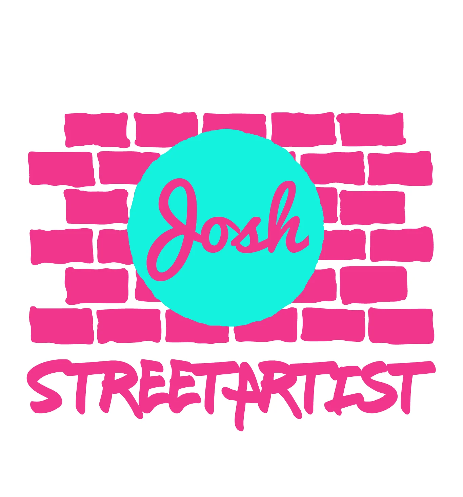
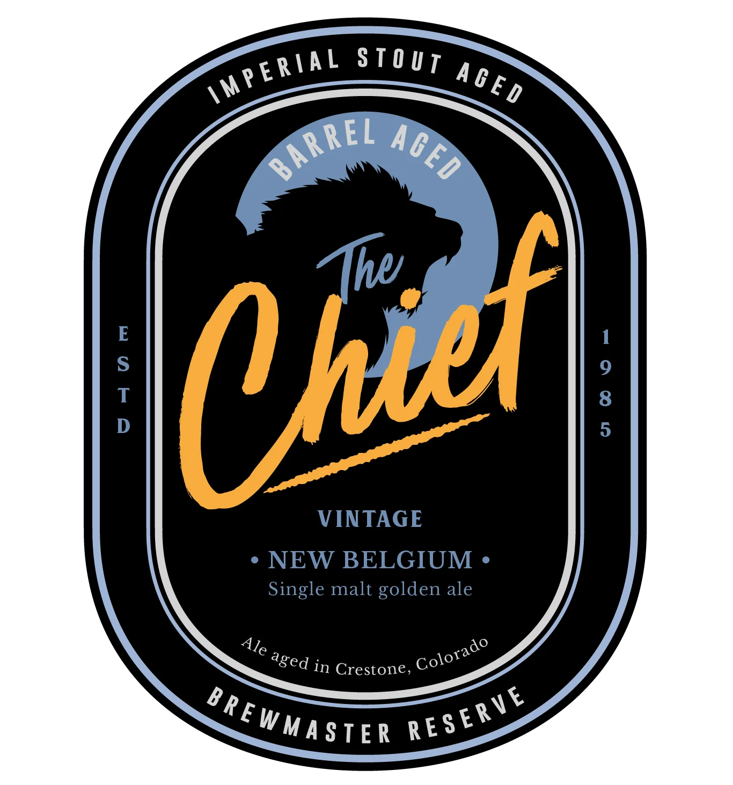

LOGOS & VISUAL LANGUAGE
Identity studies
Different voices. Distinct identities.
Identity concepts · Typography · Color · Visual direction
Wordmark explorations · Symbol and illustrative marks · Color and typography direction · Identity and label compositions
 Enlarge image
Enlarge image
Enlarge image Enlarge image
Enlarge image
Enlarge image
Enlarge image
Enlarge image
Enlarge imageTHE THINKING
Context, craft,
and delivery.
The context
An identity must feel specific to the person, offering, and audience behind it. This collection explores different visual voices rather than applying one signature treatment to every subject.
My contribution
The work spans wordmarks, symbols, illustrative marks, and label-style compositions. Together, the studies demonstrate choices about personality, hierarchy, legibility, and the relationship between a name and a visual idea.
Making the work useful
Identity concepts become useful discussion tools when stakeholders can compare clear alternatives and understand the reasoning behind them. These are selected studies from the design archive, not a roster of claimed client commissions.
Selected identity studies. Brand and trade names identify the displayed designs; inclusion does not imply a commissioned engagement or endorsement.